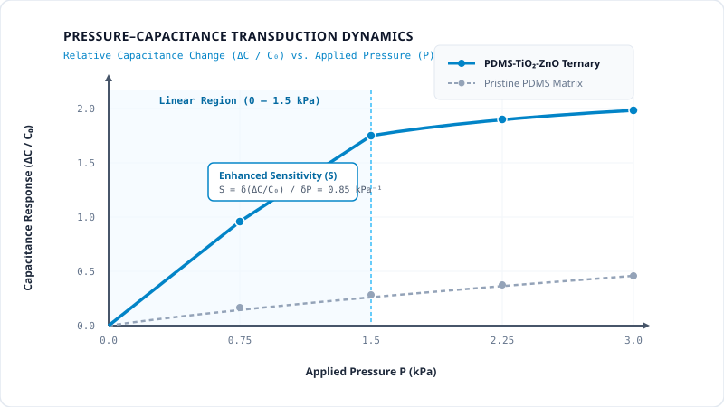

1. Scientific Research Problem
Among all electrical transduction mechanisms—piezoresistive, piezoelectric, triboelectric, and capacitive—capacitive pressure sensors (CPSs) offer distinct advantages: simple device architecture, minimal temperature drift, negligible static power consumption, and straightforward signal conditioning.
However, traditional flexible capacitive sensors utilizing pristine polydimethylsiloxane (PDMS) suffer from fundamentally poor sensitivity. Pristine PDMS possesses a low relative dielectric permittivity ($\varepsilon_r \approx 2.7$) and high bulk modulus under constraint, requiring substantial compressive stress to produce detectable capacitance changes ($\Delta C / C_0$). While micro-structuring techniques (such as photolithographic pyramids or porous sponges) can improve compliance, they often introduce complex fabrication steps, poor mechanical fatigue life, and pronounced viscoelastic hysteresis during continuous cycling.
2. Research Objectives
- Synthesize stable ternary dielectric elastomer composites (DECs) by co-dispersing ceramic high-k titanium dioxide (TiO₂) and zinc oxide (ZnO) nanoparticles into a PDMS elastomer matrix.
- Establish uniform thin-film spin-coating deposition parameters to achieve defect-free dielectric sandwich layers (~100 µm thickness).
- Quantify the electromechanical capacitive response, working linear pressure range, response/relaxation kinetics, and cyclic endurance over 2,000 continuous compression cycles.

3. Materials & Formulation Chemistry
A systematic matrix of composite formulations was prepared using medical-grade polydimethylsiloxane (Sylgard 184, Dow Corning) with a 10:1 base-to-curing agent ratio. Titanium dioxide (TiO₂) nanoparticles (rutile/anatase phase, average diameter ~30–50 nm) and zinc oxide (ZnO) nanoparticles (~40–60 nm) were co-dispersed via controlled ultrasonic cavitation.
| Formulation Code | Matrix Polymer | TiO₂ Content (wt%) | ZnO Content (wt%) | Working Range | Sensitivity (S) |
|---|---|---|---|---|---|
| CPS-0 (Control) | Pure PDMS | 0.0 wt% | 0.0 wt% | 0 – 1.5 kPa | 0.18 kPa⁻¹ |
| CPS-1 | PDMS Composite | 0.5 wt% | 0.0 wt% | 0 – 1.5 kPa | 0.39 kPa⁻¹ |
| CPS-2 | PDMS Composite | 0.5 wt% | 0.25 wt% | 0 – 1.5 kPa | 0.58 kPa⁻¹ |
| CPS-3 (Optimal) | PDMS Composite | 0.5 wt% | 0.5 wt% | 0 – 1.5 kPa | 0.85 kPa⁻¹ |
4. Experimental Methodology
- Colloidal Sonication: Weighted proportions of TiO₂ and ZnO nanoparticles were pre-suspended in analytical-grade isopropanol and subjected to high-intensity probe sonication (20 kHz, 150 W) for 45 minutes to break hard agglomerates.
- Matrix Homogenization: The nanoparticle dispersion was compounded with PDMS prepolymer and mechanically stirred at 1,200 rpm for 60 minutes, followed by vacuum degassing at 0.1 bar for 30 minutes to eliminate entrapped microbubbles.
- Spin-Coating Deposition: The degassed nanocolloids were dynamically spin-coated onto cleaned flexible substrates at 2,000 rpm for 40 seconds to yield planar, uniform thin-film dielectric layers.
- Thermal Curing: Films were cured in a precision convection oven at 80°C for 120 minutes.
- Electromechanical Profiling: Fabricated sensor cells were mounted onto a custom motorized mechanical compression stage interfaced with a high-frequency precision LCR meter for continuous capacitance recording.

5. Documented Research Findings
- Sensitivity Enhancement: Incorporation of 0.5 wt% TiO₂ and 0.5 wt% ZnO boosted the relative capacitance sensitivity by over 4.7-fold compared to pristine PDMS, attributable to Maxwell-Wagner-Sillars interfacial polarization and enhanced local electric displacement.
- Linearity Maintenance: All fabricated devices maintained an identical linear response domain from 0 to 1.5 kPa, confirming that low-volume ceramic filler additions did not compromise bulk mechanical elasticity.
- Dynamic Stability: High-speed step-loading tests revealed instantaneous response times ($\tau_r < 38\text{ ms}$) and recovery times ($\tau_d < 45\text{ ms}$), with negligible drift across 2,000 continuous compression-decompression cycles.
6. Scientific Limitations
While the low-pressure sensitivity was significantly augmented, the sensor's linear region becomes sub-linear beyond 1.5 kPa due to the mechanical saturation of the thin elastomer dielectric under compressive strain. Furthermore, filler concentrations exceeding 1.0 wt% aggregate into larger clusters, leading to elevated dielectric dissipation ($\tan \delta$) and localized breakdown risk under high voltage fields.
7. Industrial & Collaborative Relevance
The demonstrated low-pressure sensitivity domain (0–1.5 kPa) coincides precisely with human physiological pulse pressures, gentle tactile touch, and soft robotics grasping feedback. The spin-coating fabrication route is fully compatible with roll-to-roll printed electronics and cleanroom flexible microelectronics manufacturing.